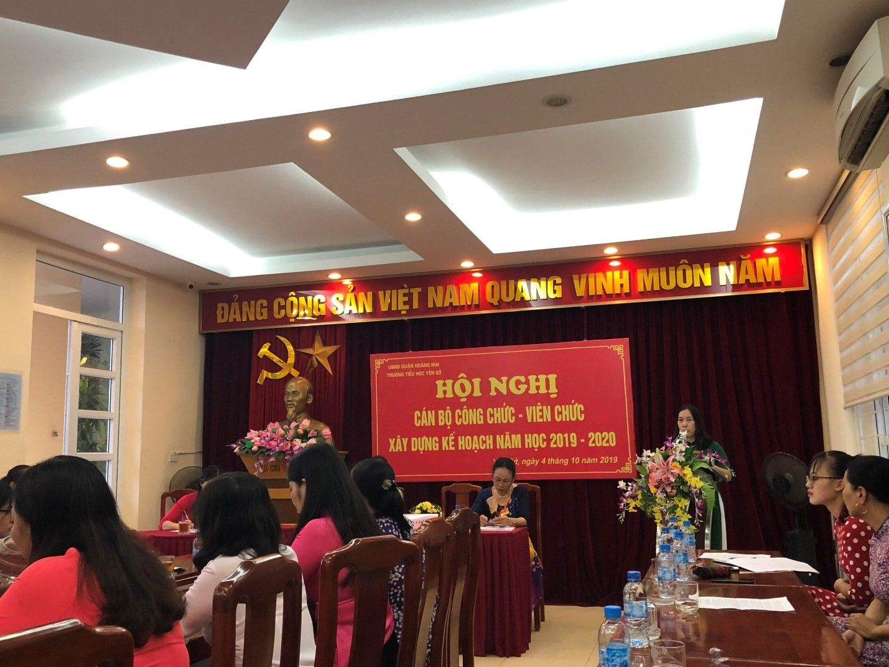

Trường tiểu học Yên Sở tổ chức Hội nghị cán bộ công chức, viên chức Năm học 2019 – 2020
Hòa chung niềm vui của nhân dân Thủ đô và cả nước chào mừng ngày Quốc khánh 2/9, ngày Giải phóng Thủ đô 10/10. Sáng ngày 04/10/2019, trường tiểu học Yên Sở long trọng tổ chức Hội nghị cán bộ công chức, viên chức năm học 2019 – 2020.
Về tham dự Hội nghị có đầy đủ các đồng chí cán bộ, giáo viên, công nhân viên của nhà trường. Mở đầu Hội nghị là phần Văn nghệ chào mừng với các tiết mục đặc sắc của các thầy giáo, cô giáo trường Tiểu học Yên Sở.
Văn nghệ chào mừng Hội nghị
Hội nghị được nghe đồng chí Nguyễn Thị Hồng – Bí thư chi bộ, Hiệu trưởng nhà trường báo cáo tổng kết việc thực hiện Nghị quyết Hội nghị cán bộ công chức năm học 2018 – 2019 và dự thảo kế hoạch thực hiện nhiệm vụ năm học 2019 – 2020.

Đồng chí Nguyễn Thị Hồng – Bí thư Chi bộ, Hiệu trưởng nhà trường
báo cáo dự thảo kế hoạch thực hiện nhiệm vụ năm học 2019 - 2020.
Tiếp theo, Hội nghị còn được nghe các đồng chí trong ban thanh tra nhân dân của nhà trường báo cáo hoạt động của Ban thanh tra nhân dân năm học 2018–2019 và thông qua chương trình công tác, hoạt động của Ban thanh tra nhân dân nhiệm kì 2019 – 2021.
Sau các báo cáo là phần tham luận đầy trách nhiệm của các thành viên tham dự Hội nghị về các chỉ tiêu thi đua, các giải pháp để thực hiện tốt nhiệm vụ năm học 2019 – 2020. Sôi nổi nhất là những ý kiến tham luận về các biện pháp để thực hiện tốt các cuộc vận động, đặc biệt là cuộc vận động “Học tập và làm theo tấm gương đạo đức Hồ Chí Minh”; các biện pháp để nâng cao chất lượng đại trà và mũi nhọn trong nhà trường,…
Hội nghị đã bầu được Ban thanh tra nhân dân nhiệm kì 2019 – 2021; thống nhất các kế hoạch, chỉ tiêu đề ra, hứa quyết tâm thực hiện thông qua biểu quyết 100% ý kiến nhất trí và đã kí giao ước thi đua giữa đồng chí Hiệu trưởng và đồng chí Chủ tịch công đoàn nhà trường.
Các đ/c cán bộ giáo viên, nhân viên nhà trường nhất trí
với các kế hoạch, chỉ tiêu năm học
Hội nghị cán bộ, công chức, viên chức trường tiểu học Yên Sở năm học 2019 – 2020 đã diễn ra thành công tốt đẹp. Hơn bao giờ hết, mỗi cán bộ giáo viên, nhân viên nhà trường càng hiểu rõ hơn trách nhiệm của mình, với tâm huyết, lòng nhiệt tình, năng lực lãnh đạo sáng tạo của Ban giám hiệu, tinh thần đoàn kết, sự quyết tâm nỗ lực của mỗi cán bộ giáo viên, công nhân viên, trường tiểu học Yên Sở sẽ gặt hái được nhiều thành công trong năm học 2019 – 2020.